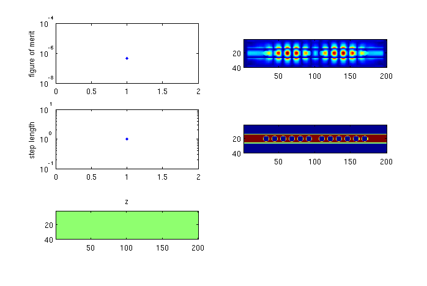
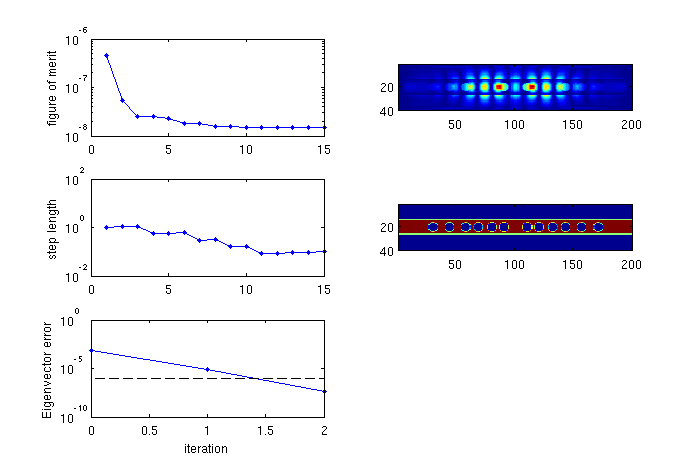

mode_optimization_example
Example of the optimization of an eigenmode.
Contents
Description
This script varies the horizontal position of the holes of a beam resonator in order to match a particular resonance frequency, and to increase quality factor.
% Make this a function instead of a script to allow for nested function definitions. function [] = optimize_2D_mode_example()
Create the initial structure
We use the add_planar and stretched_coordinates functions to create our structure as well as our simulation grid.
lambda_target = 0.18^2; % Target eigenvalue. tr = 0.12; ti = 1 / 3e3; ti = 0; r_on = 0; dims = [200 40 1]; % Size of the simulation. omega = 0.154; % Frequency of the simulation. %omega = 0.18; % Frequency of the simulation. lattice_spacing = 12; p = lattice_spacing * [0.75:1:6]'; % Starting structure parameters. epsilon = my_structure(dims, p);
Create the simulation parameters
% Create the s-parameters. [s_prim, s_dual] = stretched_coordinates(omega, dims, [10 10 0]); % Create the current source this is only used to get v_guess for the mode solver. J = {zeros(dims), zeros(dims), zeros(dims)}; J{2}(dims(1)/2 + 1, dims(2)/2, 1) = 1; % Permeability. mu = {ones(dims), ones(dims), ones(dims)}; % Get matrices for error checking. [A1, A2, m, e, b] = maxwell_matrices(omega, s_prim, s_dual, mu, epsilon, J); my_diag = @(z) spdiags(z(:), 0, numel(z), numel(z)); A = A1 * my_diag(m.^-1) * A2;
Get the initial guess of the eigenmode
We obtain the initial guess by performing a simulation.
v_guess = my_simulate(omega, s_prim, s_dual, mu, epsilon, J); % Simulate. % Plot the initial structure and the intial eigenmode guess. my_plotter(e, dims); colormap gray; snapnow; my_plotter(v_guess, dims); snapnow; fprintf('v_guess error: %e \n', ... norm(A * v_guess - omega^2 * (e .* v_guess) - b) / norm(b));


v_guess error: 1.041221e-15
Setup for the eigenvalue optimization routine
% Objective function. % f = @(l) 0.5 * norm(l - lambda_target)^2; m = 2; f = @(l) sign(m) * (abs(imag(sqrt(l))-ti)^m + r_on * abs(real(sqrt(l))-tr)^m); df_dl = @(l) sign(m) * (-1i * (m * abs(imag(sqrt(l))-ti)^(m-1) * sign(imag(sqrt(l))-ti) * 0.5*(l)^-0.5) ... + r_on * (m * abs(real(sqrt(l))-tr)^(m-1) * sign(real(sqrt(l))-tr) * 0.5*(l)^-0.5)); % Helper functions. n = prod(dims); vec = @(z) [z{1}(:); z{2}(:); z{3}(:)]; unvec = @(z) {reshape(z(1:n), dims), reshape(z(n+1:2*n), dims), reshape(z(2*n+1:3*n), dims)}; % Shortcut notation for getting the eigenmode. my_eig = @(p, v_guess) my_eigensolver(@my_simulate, @(lambda, v) lambda, s_prim, s_dual, mu, my_structure(dims, p), v_guess); % Initial values. [lambda, v, w] = my_eig(p, v_guess); f_cur = f(lambda); step_len = 1e0; p_best = p;

Run the eigenvalue optimization routine
for k = 1 : 20 % Display and record the progress we have made so far. % Print out to command-line. fprintf('%d: %1.3e (%1.3f, %1.2e) [', k-1, f_cur, real(sqrt(lambda)), 1/imag(sqrt(lambda))); for l = 1 : length(p) fprintf('%1.2f ', p(l)); end fprintf('\b]\n'); % Record. hist(k) = struct('p', p, 'f', f_cur, 'step_len', step_len); % Plot. subplot 321; semilogy([hist(:).f], 'b.-'); ylabel('figure of merit'); subplot 323; semilogy([hist(:).step_len], 'b.-'); ylabel('step length'); E = unvec(v); epsilon = my_structure(dims, p); subplot 322; imagesc(abs(E{2})'); axis equal tight; subplot 322; imagesc(abs(E{2})'); axis equal tight; subplot 324; imagesc((epsilon{2})'); axis equal tight; subplot 325; snapnow; % Check termination condition. % % if f_cur < 1e-10 % break % end % Compute the derivative $df/dp$. % Compute the algebraic derivative. e = vec(my_structure(dims, p)); dl_de = -(lambda / (w' * (e .* v))) * (w' .* v.'); % Compute the structural derivative. for k = 1 : length(p) dp = zeros(size(p)); dp(k) = 1; de = 1e6 * (vec(my_structure(dims, p + 1e-6*dp)) - e); dl_dp(k) = dl_de * de; end % Compute the objective derivative. df_dp = df_dl(lambda) * dl_dp; % % Check the algebraic derivative. % fun = @(e) my_eigensolver(s_prim, s_dual, mu, unvec(e), v); % alg_err = test_derivative(fun, dl_de, lambda, e, 1e-2); % % % Check the structural derivative. % fun = @(p) my_eig(p, v); % struct_err = test_derivative(fun, dl_dp, lambda, p, 1e-2); % % % Check objective derivative. % fun1 = @(p) my_eig(p, v); % fun = @(p) f(fun1(p)); % obj_err = test_derivative(fun, df_dp, f(lambda), p, 1e-2); % % fprintf('Derivative errors: %e, %e, %e\n', alg_err, struct_err, obj_err); % Update p. % Take a step. delta_p = -real(df_dp'); % Steepest-descent direction, keep p real. s = step_len / max(abs(delta_p(:))); % Step distance, based on maximum parameter change. p_n = p + s * delta_p; % Obtain the next value of p. % Compute the new eigenmode. [lambda_n, v_n, w_n] = my_eig(p_n, v); f_n = f(lambda_n); % Decide whether or not to keep p_n. if (f_n <= f_cur) % Figure-of-merit improves, keep. p = p_n; lambda = lambda_n; v = v_n; w = w_n; f_cur = f_n; step_len = 1.05 * step_len; else % Figure-of-merit does not improve, decrease step length. step_len = step_len/2; end end
0: 4.593e-07 (0.111, 1.48e+03) [9.00 21.00 33.00 45.00 57.00 69.00]
1: 5.414e-08 (0.112, 4.30e+03) [9.37 21.14 32.53 44.05 56.69 70.00]
2: 2.540e-08 (0.116, 6.27e+03) [9.85 21.29 31.65 43.00 56.61 70.86]
3: 2.540e-08 (0.116, 6.27e+03) [9.85 21.29 31.65 43.00 56.61 70.86]

4: 2.311e-08 (0.115, 6.58e+03) [9.86 20.81 32.20 42.78 56.61 70.75]
5: 1.847e-08 (0.115, 7.36e+03) [10.10 20.66 31.62 42.93 56.69 70.65]

6: 1.847e-08 (0.115, 7.36e+03) [10.10 20.66 31.62 42.93 56.69 70.65]
7: 1.594e-08 (0.115, 7.92e+03) [9.96 20.35 31.87 42.68 56.60 70.60]
8: 1.594e-08 (0.115, 7.92e+03) [9.96 20.35 31.87 42.68 56.60 70.60]
9: 1.522e-08 (0.115, 8.11e+03) [10.07 20.21 31.71 42.66 56.61 70.59]
10: 1.522e-08 (0.115, 8.11e+03) [10.07 20.21 31.71 42.66 56.61 70.59]
11: 1.509e-08 (0.115, 8.14e+03) [10.01 20.19 31.76 42.57 56.63 70.58]
12: 1.497e-08 (0.116, 8.17e+03) [10.06 20.10 31.73 42.56 56.67 70.54]
13: 1.475e-08 (0.115, 8.24e+03) [9.96 20.06 31.78 42.50 56.58 70.50]
14: 1.462e-08 (0.116, 8.27e+03) [10.01 19.96 31.72 42.59 56.55 70.55]
15: 1.385e-08 (0.116, 8.50e+03) [9.93 19.86 31.79 42.52 56.52 70.50]
16: 1.337e-08 (0.116, 8.65e+03) [9.95 19.75 31.78 42.48 56.50 70.46]
17: 1.304e-08 (0.116, 8.76e+03) [9.93 19.64 31.79 42.50 56.47 70.47]
18: 1.304e-08 (0.116, 8.76e+03) [9.93 19.64 31.79 42.50 56.47 70.47]
19: 1.301e-08 (0.116, 8.77e+03) [9.91 19.63 31.81 42.45 56.51 70.48]
end
Source code for private functions
function [epsilon] = my_structure(dims, hole_y_pos) % Private function to create a photonic crystal beam structure. my_shapes = {struct('type', 'rectangle', ... 'position', [0 0], ... 'size', [1e9 1e9], ... 'permittivity', 1), ... struct('type', 'rectangle', ... 'position', [0 0], ... 'size', [1e9 12], ... 'permittivity', 12.25)}; hole_radius = 4; for k = 1 : length(hole_y_pos) my_shapes{end+1} = struct('type', 'circle', ... 'position', [hole_y_pos(k) 0], ... 'radius', hole_radius, ... 'permittivity', 1); my_shapes{end+1} = struct('type', 'circle', ... 'position', [-hole_y_pos(k) 0], ... 'radius', hole_radius, ... 'permittivity', 1); end for k = [-1, 1] my_shapes{end+1} = struct('type', 'rectangle', ... 'position', [k*dims(1)/2 0], ... 'size', [20 2*hole_radius+1], ... 'permittivity', 12.25); end epsilon = {ones(dims), ones(dims), ones(dims)}; epsilon = add_planar(epsilon, 1e9, 1, my_shapes); end function [x] = my_simulate(omega, s_prim, s_dual, mu, epsilon, J) % Private function to simulate. Used to get initial guess. % Get matrices. [A1, A2, m, e, b] = maxwell_matrices(omega, s_prim, s_dual, mu, epsilon, J); % Solve. my_diag = @(z) spdiags(z(:), 0, numel(z), numel(z)); x = (A1 * my_diag(m.^-1) * A2 - omega^2 * my_diag(e)) \ b; end function my_plotter(x, dims) % Private function to visualize the electric field. xyz = 'xyz'; colormap jet n = prod(dims); for k = 1 : 3 E{k} = reshape(x((k-1)*n+1 : k*n), dims); subplot(3, 2, 2*k-1) imagesc(abs(E{k})'); axis equal tight; title(xyz(k)); end subplot(1, 2, 2); end function [lambda, v, w] = my_eigensolver(sim, vis, s_prim, s_dual, mu, epsilon, v_guess) % Private function to obtain the left- and right-eigenmode of the structure. % Get ingredient matrices and vectors. [A1, A2, m, e] = maxwell_matrices(0, s_prim, s_dual, mu, epsilon, epsilon); dims = size(epsilon{1}); n = prod(dims); my_diag = @(z) spdiags(z(:), 0, numel(z), numel(z)); unvec = @(z) {reshape(z(1:n), dims), reshape(z(n+1:2*n), dims), reshape(z(2*n+1:3*n), dims)}; % Form full matrix. % Note that we actually form the matrix for F, where F = sqrt(e) E. A = my_diag(e.^-0.5) * A1 * my_diag(m.^-1) * A2 * my_diag(e.^-0.5); v_guess = sqrt(e) .* v_guess; % Convert from F-field to E-field. % Compose function handles. mult_A = @(x) A * x; function [x] = solve_A_shifted(lambda, b) % This is an F-field solver. omega = sqrt(lambda); J = unvec(-i * omega * b); x = sqrt(e) .* sim(omega, s_prim, s_dual, mu, epsilon, J); end % Find the eigenmode [lambda, v] = eigenmode_solver(mult_A, @solve_A_shifted, vis, v_guess, 10, 1e-6); % Convert v from F-field to E-field. v = v ./ sqrt(e); % Form symmetrization matrix S to obtain right-eigenmode w. [spx, spy, spz] = ndgrid(s_prim{1}, s_prim{2}, s_prim{3}); [sdx, sdy, sdz] = ndgrid(s_dual{1}, s_dual{2}, s_dual{3}); S = my_diag([sdx(:).*spy(:).*spz(:); ... spx(:).*sdy(:).*spz(:); ... spx(:).*spy(:).*sdz(:)]); % Obtain right eigenvector. w = conj(S * v); end function [err] = test_derivative(fun, df_dz, f0, z0, step_len) % Check a derivative. % Produce a random direction. dz = randn(size(z0)); dz = step_len * dz / norm(dz); % Evaluate delta in that direction empirically delta_empirical = fun(z0 + dz) - f0; delta_derivative = real(df_dz * dz); err = norm(delta_empirical - delta_derivative) / norm(delta_empirical); end